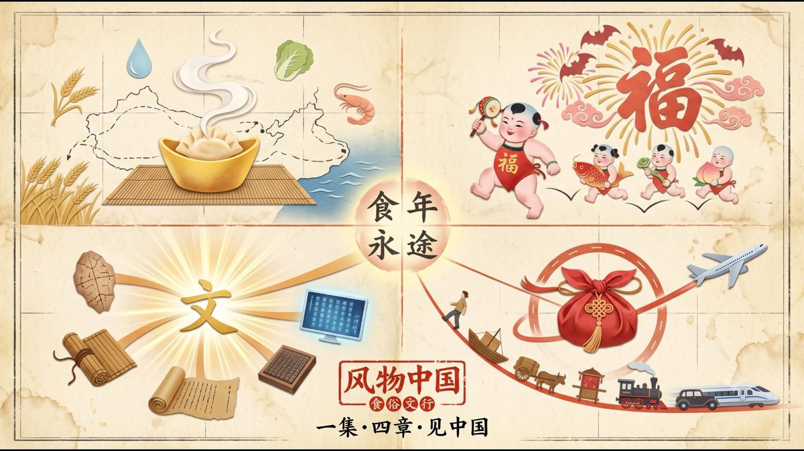

WORKS
作品
写下来的、画出来的，都在这里。最上面这一件，是我最在意的。

31 本 · 持续更新
给女儿的绘本
文 / 图 都是我。一一从出生到现在，每一件小事都被画成了故事。
进入 →也想给你家孩子做一本？

AIGC 系列纪录片 · 已完成 3 集
风物中国
纸工艺拼贴 × Vox 解说风格。物、时、空、人、艺，五个系列一百一十个片段——用 AI 的笔触，重新描摹中国。
进入 →
01
✒️岛主的诗现代诗，写在情绪落下来的时候。点开，翻几页。
02
📜故事别传把神话拆开，借古人的壳，说今天的事。陆续上新。
03
💡岛主的奇思妙想短篇、长篇，还有一些没想好放哪的故事。抽屉里慢慢填。
04
🌱芽芽兽一只从岛上长出来的小兽。它的长图介绍和品牌视觉，都收在这个角落。
05
🧳岛主和佳佳的旅行手账定制你的国内慢游路线：地图、时间线、吃喝与故事。从我们的小红书日记里长出来。
岛主的诗
现代诗，写在情绪落下来的时候。
故事别传
把神话拆开，借古人的壳，说今天的事。
岛主的奇思妙想
短篇小说、长篇小说，还有一些没想好放哪的故事。
芽芽兽
原创 IP · 一只从岛上长出来的小兽，长图介绍和品牌视觉都在。
岛主和佳佳的旅行手账
把偏好交给一套路线引擎，长成一条能出发的国内慢游路线。灵感来自我们的小红书旅行日记。